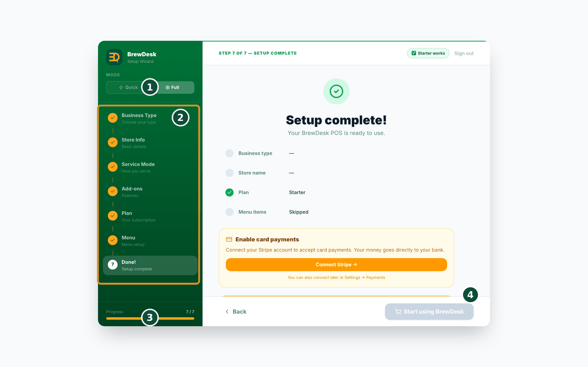

2Inicio rápido
Esta es la forma más rápida de hacer su primera venta. Puede hacerlo en unos cinco minutos. Solo siga cada pequeño paso.
- Abra un navegador web y vaya a brewdesk.io.
- Escriba su correo y una contraseña para registrarse. No necesita tarjeta de crédito.
- Elija qué tipo de tienda tiene: cafetería, restaurante, bar, salón, spa o panadería. BrewDesk se configura según su elección.
- Toque el botón AI menu builder. Crea un menú inicial en segundos. (O puede escribir usted mismo algunos productos).
- Busque la pantalla de pedidos. Toque un producto para agregarlo al pedido.
- Toque Cash (Efectivo) para terminar la venta en el momento. Aparece el mensaje "Sale complete". Eso es todo: ¡su primera venta está hecha!
- Más adelante, cuando quiera aceptar tarjetas, podrá vincular su propia cuenta de Stripe. (Le mostramos cómo en Cobrar).
Cinco minutos, nada que instalar, sin clases. La mayoría de las otras cajas le obligan a agendar una llamada de configuración. Con BrewDesk empieza a vender antes de que se le enfríe el café.
Configuración inicial (los 7 pasos)
Al registrarse por primera vez, un asistente sencillo lo guía por unos pocos pasos. Esto es lo que pregunta, en orden. Solo vaya tocando. Si elige el modo Quick (Rápido) arriba a la izquierda, se omiten los pasos Service Mode y Add-ons; el modo Full (Completo) recorre los 7 pasos de abajo.
- Business Type (Tipo de negocio): elija qué tipo de tienda tiene: cafetería, restaurante, bar, salón, spa o panadería.
- Store Info (Info de la tienda): escriba el nombre de su tienda, elija su país o región e indique cuántas cajas registradoras tiene.
- Service Mode (Modo de servicio): elija Counter (los clientes piden en el mostrador) o servicio Table (los clientes piden en su mesa).
- Add-ons (Complementos): active las funciones adicionales que desee. Puede cambiarlas más tarde, así que no se preocupe.
- Plan: elija Starter (gratis), Pro o Business. Pro y Business incluyen un mes de prueba gratuita y no necesita tarjeta de crédito para empezar.
- Menu: empiece con una plantilla lista, deje que la AI lo cree por usted o agregue los productos usted mismo. (Más información sobre el creador de menús con IA en Crear su menú).
- Done (Hecho): la pantalla "Setup complete!" resume sus elecciones. Para aceptar tarjetas, toque Connect Stripe (Conectar Stripe) aquí, o conéctelo más tarde en Settings › Payments. Por último, toque Start using BrewDesk (Comenzar a usar BrewDesk).
Solo si elige el complemento Staff, aparece un paso adicional, Owner PIN (PIN del dueño), después del paso Menu (un PIN de 4 dígitos; puede omitirlo). Cuando aparece, el asistente tiene 8 pasos en lugar de 7.
¡Eso es todo! Solo tendrá que confirmar una breve nota sobre impuestos y estará listo para vender.

Cuando esté listo, pase de la práctica a la venta real en Puesta en marcha.
Temas relacionados
¿Necesita más ayuda?
Puede enviar un ticket de soporte desde la app en Settings › Support.